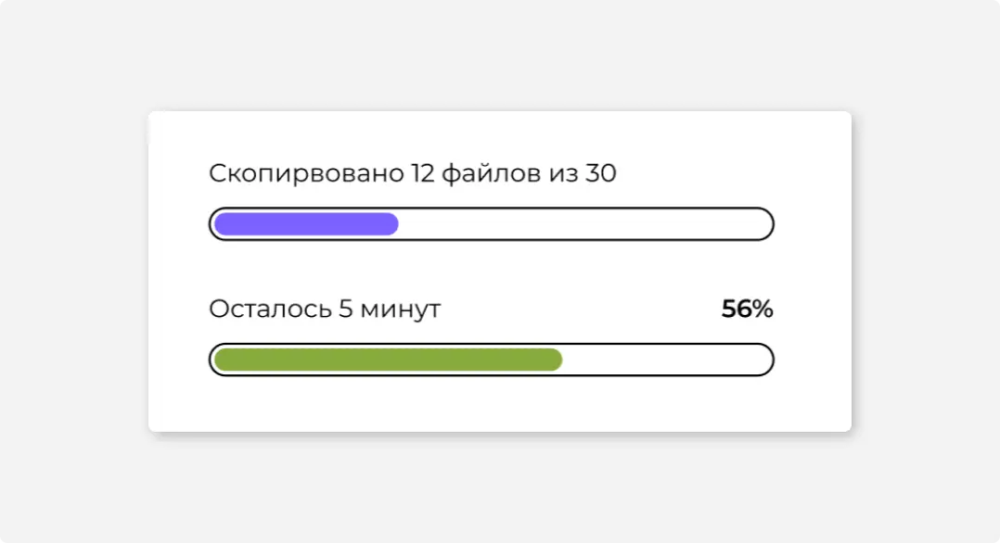

#1
Назначение
Индикатор выполнения (прогресс-бар) — это индикатор, который отображает прогресс выполнения задачи.
Используйте прогресс-бар, если процесс в среднем длится дольше 10 секунд. Понимание того, когда процесс завершится, дает ощущение контроля и улучшает пользовательский опыт.
Создание прогресс-бара требует больше усилий, чем подключение спиннера, и оправдано, если сценарий частотный.
Если получить данные о ходе выполнения задачи невозможно, лучше использовать спиннер.
#2
Описание работы
Прогресс-бар делится на отрезки по количеству подзадач пропорционально среднему времени их выполнения. Например, чтобы выполнить команду пользователя, нужно сделать три подзадачи. Известно, что первые две в среднем занимают по 10 секунд, третья — 5 секунд. Значит, должны получиться такие отрезки:
Если среднее время выполнения задач неизвестно, то прогресс-бар следует разделить на отрезки равной длины, а за среднее время взять минимально ожидаемое время.
Если задача не имеет подзадач, то прогресс-бар может равномерно заполняться до значения 75 %, после чего ждать информации о завершении задачи. Фактически такой прогресс-бар является имитацией и малоинформативен для пользователей, лучше, когда есть три и больше подзадач.
Прогресс-бар можно красить в цвет продукта или ссылок в интерфейсе:
Рекомендуем указывать, сколько времени осталось до конца задачи.
Округляйте в большую сторону: если процесс завершится раньше, пользователю будет приятно. Обратная ситуация вызовет негативные эмоции и снизит доверие к интерфейсу.